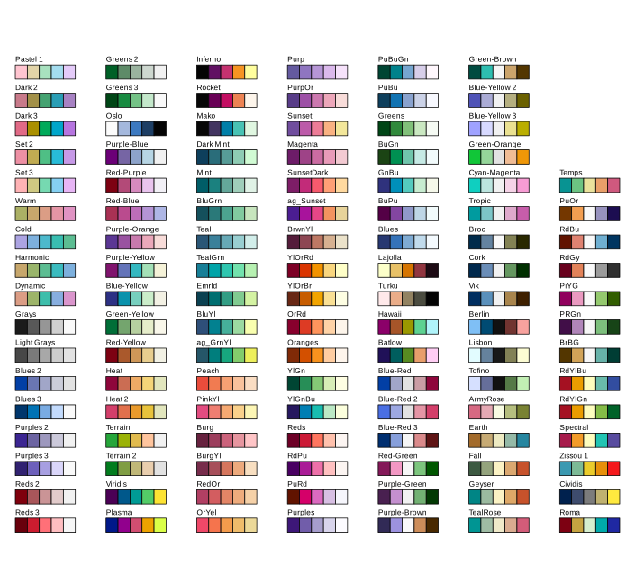
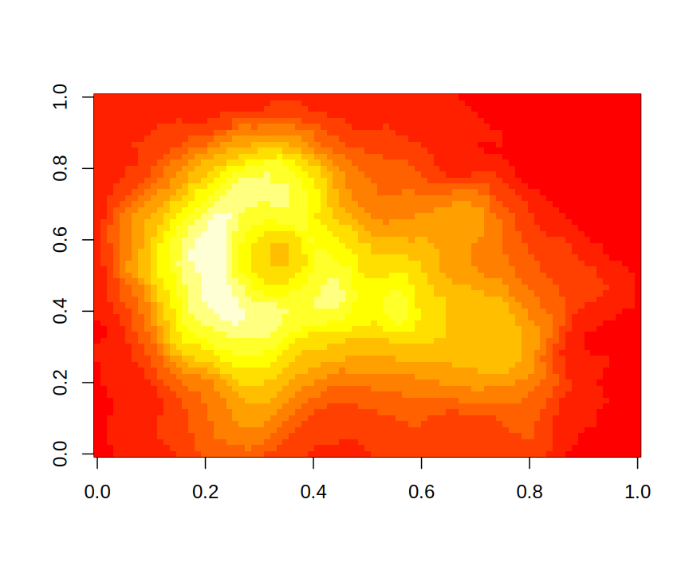
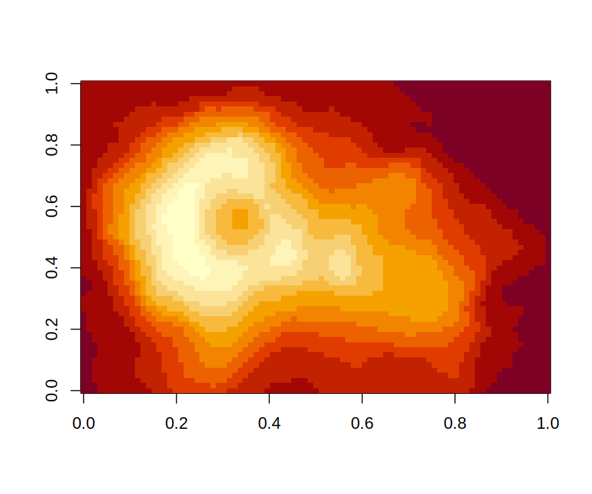
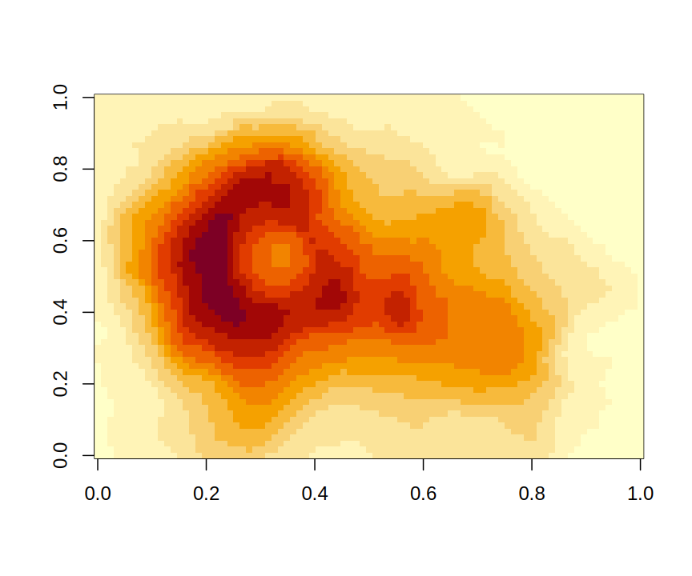
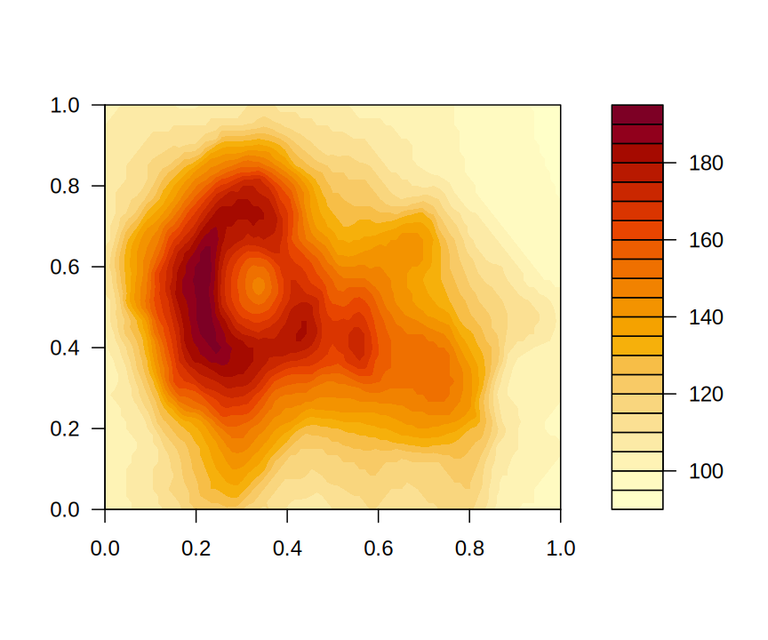

Starting with R 3.6.0 a new hcl.colors() function is available in grDevices, providing a wide range of HCL-based color palettes with much better perceptual properties than existing RGB/HSV-based palettes like rainbow(). An accompanying new hcl.pals() function lists available palette names for hcl.colors(). It is a basic and lean implementation of the pre-specified palettes in the colorspace package, closely approximating palettes from many other packages like ColorBrewer, CARTO, viridis, scico, etc.
The default colors for image() and filled.contour() are now based on hcl.colors(). Palette-generating functions rainbow(), gray.colors(), etc. get a new rev argument to facilitate reversing the order of colors.
HCL vs. RGB/HSV palettes
HSV (hue-saturation-value) is a simple transformation of the RGB (red-green-blue) space which was therefore a convenient choice for color palettes in many software systems (see also ?hsv). However, HSV colors capture the perceptual properties hue, colorfulness/saturation/chroma, and lightness/brightness/luminance/value only poorly and consequently the corresponding palettes are typically not a good choice for statistical graphics and data visualization, see https://zeileis.codeberg.page/colorspace/articles/endrainbow.html.
In contrast, HCL (hue-chroma-luminance) colors are much more suitable for capturing human color perception (see also ?hcl). As discussed in our recent arXiv:1903.06490 paper, better color palettes can be derived based on HCL coordinates. Conceptually, three types of palettes are often distinguished:
- Qualitative: For coding categorical information, i.e., where no particular ordering of categories is available and every color should receive the same perceptual weight.
- Sequential: For coding ordered/numeric information, i.e., where colors go from high to low (or vice versa).
- Diverging: Designed for coding numeric information around a central neutral value, i.e., where colors diverge from neutral to two extremes.
The hcl.colors() function provides a basic and lean implementation of the pre-specified palettes in the colorspace package, see https://zeileis.codeberg.page/colorspace/articles/hcl_palettes.html. In addition to the types above, the functions distinguish “diverging” palettes where the two arms are restricted to be rather balanced as opposed to flexible “divergingx” palettes that combine two sequential palettes without any restrictions. The latter group also includes the cividis palette as it is based on two different hues (blue and yellow) but it is actually a sequential palette (going from dark to light).
Available HCL palettes
The names of all available HCL palettes can be queried with the hcl.pals() function and they are also visualized by color swatches when running example("hcl.colors"). Many of the palettes closely approximate palettes of the same name from various other packages (including RColorBrewer, rcartocolor, viridis, scico, among others, see https://zeileis.codeberg.page/colorspace/articles/approximations.html).
The default HCL palette is the widely used viridis palette which is a sequential palette with relatively high chroma throughout so that it also works reasonably well as a qualitative palette. However, while viridis is a rather robust default palette, more suitable HCL palettes are available for most visualizations. For example, "Dark 3" works well for shading points or lines in up to five groups, "YlGnBu" is a sequential palette similar to "viridis" but aligned chroma/luminance, and "Green-Brown" or "Blue-Red 3" are colorblind-safe diverging palettes.
Default palettes for heat maps in graphics
The only functions in the graphics package that used the RGB/HSV-based palettes for their default colors were the heat maps with image() using heat.colors() and filled.contour() using cm.colors(). Their defaults have been changed now to the "YlOrRd" palette that closely approximates the ColorBrewer palette of the same name. This has been adopted because it is a sequential rather than diverging palette and uses similar hues as heat.colors() previously.
image(volcano, col = heat.colors(12))
image(volcano, col = hcl.colors(12, "YlOrRd"))

However, this ordering of colors is not optimal for bringing out a few large/interesting values among many small/uninteresting values on a white background. Therefore, by default the ordering is reversed, yielding a nicer display which is now also consistent between image() and filled.contour().
image(volcano)
filled.contour(volcano)

However, the reversal of colors in the palette might be undesired for displays that aim to bring out a few small values among many large values. Users and package developers that employ these functions with their default values are encouraged to test how well the new defaults work for them. Please let us know if you encounter problems.
References
Zeileis A, Fisher JC, Hornik K, Ihaka R, McWhite CD, Murrell P, Stauffer R, Wilke CO (2019). “ccolorspace: A Toolbox for Manipulating and Assessing Colors and Palettes.” arXiv:1903.06490, arXiv.org E-Print Archive. http://arxiv.org/abs/1903.06490.
Ihaka R (2003). “Colour for Presentation Graphics.” Proceedings of the 3rd International Workshop on Distributed Statistical Computing (DSC 2003), March 20-22, 2003, Technische Universität Wien, Vienna, Austria. http://www.ci.tuwien.ac.at/Conferences/DSC-2003/.
Zeileis A, Hornik K, Murrell P (2009). Escaping RGBland: Selecting Colors for Statistical Graphics. Computational Statistics & Data Analysis, 53, 3259-3270. 10.1016/j.csda.2008.11.033.